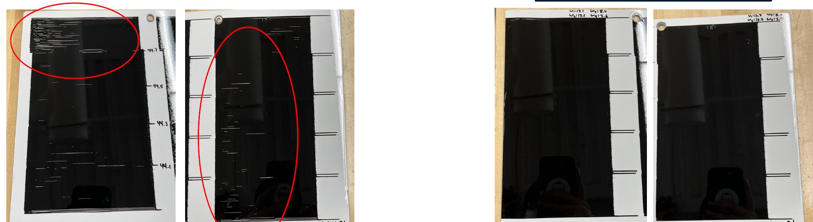
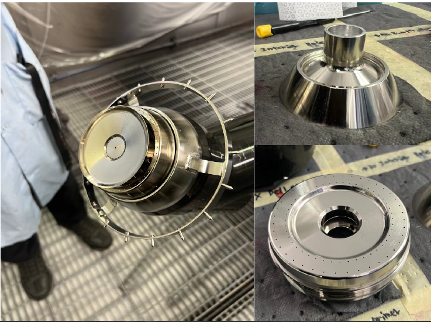
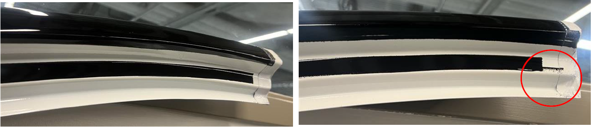

My Contribution
What I did.
This was one of the best examples for me to see the impact of a team with a very diverse set of skills and experiences. I used this opportunity to gain a wide range of knowledge from each person on the team and leverage it to for the benefit of the trial.
Supported robot setup and operation throughout the trial sequence.
Prepared paint and controlled variables including viscosity, contamination risk, and hardware condition.
Supported cartridge / bell changes and hands-on trial readiness activities.
Tracked observations, identified improvement opportunities, and documented the process for future reference.
Translated technical findings into concise reporting for engineering and leadership stakeholders.
The Problem
What needed to be solved?
Small changes in material preparation, equipment condition, or execution could affect surface quality and make the trial difficult to compare. The real problem was creating a process disciplined enough that the results could be trusted.
My Approach
How I attacked it.
I treated the work as a very controlled engineering trial rather than simply learning how to operate equipment. I focused on repeatable and careful preparation, consistent execution, fast identification of abnormal conditions, and documentation that captured both the result and the process that produced it.
Impact
Why the work mattered.
The project produced usable technical findings, a clearer trial method, and documentation that could support future work beyond the immediate team.
Process Notes
From Start to Finish.
Control material, equipment, and calibrate robot before each trial.
Run the trial consistently and observe the system in real time.
Evaluate quality and separate meaningful signals from process noise.
Adjust the process or assumptions based on what the trial exposed.
Turn observations into technical documentation and stakeholder-ready findings.
Project Visuals
Selected Visuals From The Trial.
These images show some of the physical outcomes and components from the trial while avoiding the confidential process information.



Takeaway